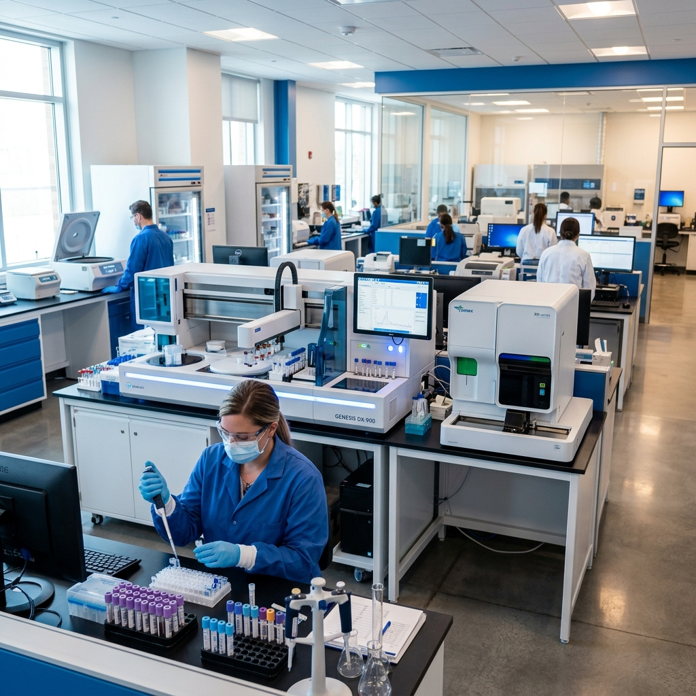
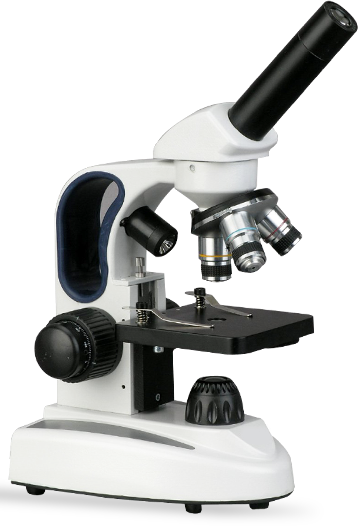

Votre santé,
notre priorité absolue
Le Laboratoire Nebia Bensmaine met à votre disposition des équipements de pointe et une équipe dévouée pour des analyses fiables, rapides et précises.


Plus de deux décennies au service de la santé à Oran
Fondé par le Docteur Bensmaine, notre laboratoire s'est imposé comme une référence en Algérie grâce à son engagement constant pour la qualité et l'innovation technologique.
- Équipements de pointe automatisés
- Contrôles qualité internes et externes stricts
- Personnel hautement qualifié et formé
- Respect rigoureux de la confidentialité
Besoin d'un prélèvement à domicile ?
Notre équipe se déplace pour votre confort. Contactez-nous dès maintenant pour prendre rendez-vous.
Nos Domaines d'Expertise
Biochimie Clinique
Analyses des paramètres métaboliques et enzymatiques pour un suivi précis de votre santé.
Hématologie
Étude complète des cellules sanguines et des mécanismes de la coagulation.
Immunologie
Détection d'anticorps et diagnostic des maladies auto-immunes et infectieuses.
Hormonologie
Dosages hormonaux précis pour le suivi endocrinien et de la fertilité.
Microbiologie
Identification d'agents pathogènes et tests de sensibilité aux antibiotiques.
Marqueurs Tumoraux
Suivi et dépistage biologique dans le cadre de la cancérologie.
Où Nous Trouver
Informations Pratiques
Nous vous accueillons dans un cadre moderne et accessible pour tous vos examens biologiques.
Adresse
73, Avenue Mustapha Benboulaid
angle abderrahmane Miloud (Ex Albert 1er)
PROTIN - ORAN
Horaires d'Ouverture
Samedi - Mercredi : 08:00 - 17:00
Jeudi : 08:00 - 14:00
Vendredi : Fermé
Contact
Tél. : 040 55 98 04
contact@labonebia.dz